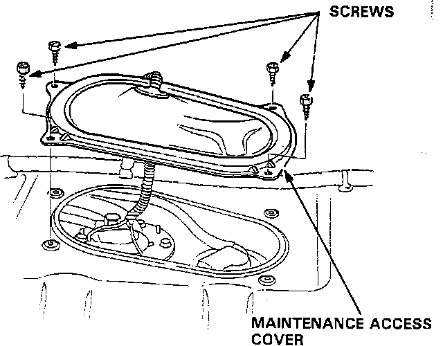
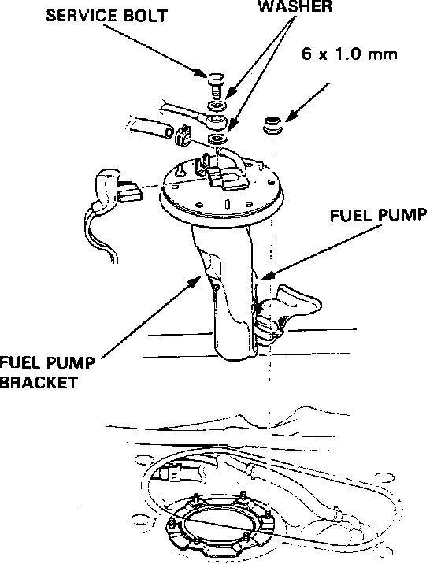

Fuel Pump: Service and Repair
CAUTION: Do NOT smoke while working on the fuel system. Keep sparks and flame away from the work area.Fuel Pump Access:

1. Loosen the fuel system service bolt to relieve fuel pressure.
2. Remove the maintenance cover in the luggage compartment.
Fuel Pump Replacement:

3. Disconnect the fuel lines and electrical connector.
4. Remove the fuel pump mounting nuts.
5. Remove the fuel pump from the tank.
6. Re-assemble in reverse order.
7. Torque pump mounting nuts to:
4 ft.lbs. (.6 kg-m)